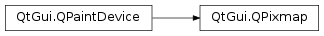

QPixmap¶
Inherited by: QBitmap
Synopsis¶
Functions¶
- def
cacheKey() - def
convertFromImage(img[, flags=Qt.AutoColor]) - def
copy([rect=QRect()]) - def
copy(x, y, width, height) - def
createHeuristicMask([clipTight=true]) - def
createMaskFromColor(maskColor[, mode=Qt.MaskInColor]) - def
fill([fillColor=Qt.white]) - def
fill(device, ofs) - def
fill(device, xofs, yofs) - def
hasAlpha() - def
hasAlphaChannel() - def
isNull() - def
isQBitmap() - def
load(fileName[, format=nullptr[, flags=Qt.AutoColor]]) - def
loadFromData(buf[, format=nullptr[, flags=Qt.AutoColor]]) - def
loadFromData(data[, format=nullptr[, flags=Qt.AutoColor]]) - def
mask() - def
rect() - def
save(device[, format=nullptr[, quality=-1]]) - def
save(fileName[, format=nullptr[, quality=-1]]) - def
scaled(s[, aspectMode=Qt.IgnoreAspectRatio[, mode=Qt.FastTransformation]]) - def
scaled(w, h[, aspectMode=Qt.IgnoreAspectRatio[, mode=Qt.FastTransformation]]) - def
scaledToHeight(h[, mode=Qt.FastTransformation]) - def
scaledToWidth(w[, mode=Qt.FastTransformation]) - def
scroll(dx, dy, rect[, exposed=nullptr]) - def
scroll(dx, dy, x, y, width, height[, exposed=nullptr]) - def
setDevicePixelRatio(scaleFactor) - def
setMask(arg__1) - def
size() - def
swap(other) - def
toImage() - def
transformed(arg__1[, mode=Qt.FastTransformation]) - def
transformed(arg__1[, mode=Qt.FastTransformation])
Static functions¶
- def
defaultDepth() - def
fromImage(image[, flags=Qt.AutoColor]) - def
fromImage(image[, flags=Qt.AutoColor]) - def
fromImageInPlace(image[, flags=Qt.AutoColor]) - def
fromImageReader(imageReader[, flags=Qt.AutoColor]) - def
grabWidget(widget, rect) - def
grabWidget(widget[, x=0[, y=0[, w=-1[, h=-1]]]]) - def
grabWindow(arg__1[, x=0[, y=0[, w=-1[, h=-1]]]]) - def
trueMatrix(m, w, h) - def
trueMatrix(m, w, h)
Detailed Description¶
The
PySide2.QtGui.QPixmapclass is an off-screen image representation that can be used as a paint device.Qt provides four classes for handling image data:
PySide2.QtGui.QImage,PySide2.QtGui.QPixmap,PySide2.QtGui.QBitmapandPySide2.QtGui.QPicture.PySide2.QtGui.QImageis designed and optimized for I/O, and for direct pixel access and manipulation, whilePySide2.QtGui.QPixmapis designed and optimized for showing images on screen.PySide2.QtGui.QBitmapis only a convenience class that inheritsPySide2.QtGui.QPixmap, ensuring a depth of 1. ThePySide2.QtGui.QPixmap.isQBitmap()function returnstrueif aPySide2.QtGui.QPixmapobject is really a bitmap, otherwise returnsfalse. Finally, thePySide2.QtGui.QPictureclass is a paint device that records and replaysPySide2.QtGui.QPaintercommands.A
PySide2.QtGui.QPixmapcan easily be displayed on the screen usingPySide2.QtWidgets.QLabelor one ofPySide2.QtWidgets.QAbstractButton‘s subclasses (such asPySide2.QtWidgets.QPushButtonandPySide2.QtWidgets.QToolButton).PySide2.QtWidgets.QLabelhas a pixmap property, whereasPySide2.QtWidgets.QAbstractButtonhas an icon property.
PySide2.QtGui.QPixmapobjects can be passed around by value since thePySide2.QtGui.QPixmapclass uses implicit data sharing. For more information, see the Implicit Data Sharing documentation.PySide2.QtGui.QPixmapobjects can also be streamed.Note that the pixel data in a pixmap is internal and is managed by the underlying window system. Because
PySide2.QtGui.QPixmapis aPySide2.QtGui.QPaintDevicesubclass,PySide2.QtGui.QPaintercan be used to draw directly onto pixmaps. Pixels can only be accessed throughPySide2.QtGui.QPainterfunctions or by converting thePySide2.QtGui.QPixmapto aPySide2.QtGui.QImage. However, thePySide2.QtGui.QPixmap.fill()function is available for initializing the entire pixmap with a given color.There are functions to convert between
PySide2.QtGui.QImageandPySide2.QtGui.QPixmap. Typically, thePySide2.QtGui.QImageclass is used to load an image file, optionally manipulating the image data, before thePySide2.QtGui.QImageobject is converted into aPySide2.QtGui.QPixmapto be shown on screen. Alternatively, if no manipulation is desired, the image file can be loaded directly into aPySide2.QtGui.QPixmap.
PySide2.QtGui.QPixmapprovides a collection of functions that can be used to obtain a variety of information about the pixmap. In addition, there are several functions that enables transformation of the pixmap.
Reading and Writing Image Files¶
PySide2.QtGui.QPixmapprovides several ways of reading an image file: The file can be loaded when constructing thePySide2.QtGui.QPixmapobject, or by using thePySide2.QtGui.QPixmap.load()orPySide2.QtGui.QPixmap.loadFromData()functions later on. When loading an image, the file name can either refer to an actual file on disk or to one of the application’s embedded resources. See The Qt Resource System overview for details on how to embed images and other resource files in the application’s executable.Simply call the
PySide2.QtGui.QPixmap.save()function to save aPySide2.QtGui.QPixmapobject.The complete list of supported file formats are available through the
QImageReader.supportedImageFormats()andQImageWriter.supportedImageFormats()functions. New file formats can be added as plugins. By default, Qt supports the following formats:
Format Description Qt’s support BMP Windows Bitmap Read/write GIF Graphic Interchange Format (optional) Read JPG Joint Photographic Experts Group Read/write JPEG Joint Photographic Experts Group Read/write PNG Portable Network Graphics Read/write PBM Portable Bitmap Read PGM Portable Graymap Read PPM Portable Pixmap Read/write XBM X11 Bitmap Read/write XPM X11 Pixmap Read/write
Pixmap Information¶
PySide2.QtGui.QPixmapprovides a collection of functions that can be used to obtain a variety of information about the pixmap:
Available Functions Geometry The PySide2.QtGui.QPixmap.size(),PySide2.QtGui.QPixmap.width()andPySide2.QtGui.QPixmap.height()functions provide information about the pixmap’s size. ThePySide2.QtGui.QPixmap.rect()function returns the image’s enclosing rectangle.Alpha component The
PySide2.QtGui.QPixmap.hasAlphaChannel()returnstrueif the pixmap has a format that respects the alpha channel, otherwise returnsfalse. ThePySide2.QtGui.QPixmap.hasAlpha(),PySide2.QtGui.QPixmap.setMask()andPySide2.QtGui.QPixmap.mask()functions are legacy and should not be used. They are potentially very slow.ThePySide2.QtGui.QPixmap.createHeuristicMask()function creates and returns a 1-bpp heuristic mask (i.e. aPySide2.QtGui.QBitmap) for this pixmap. It works by selecting a color from one of the corners and then chipping away pixels of that color, starting at all the edges. ThePySide2.QtGui.QPixmap.createMaskFromColor()function creates and returns a mask (i.e. aPySide2.QtGui.QBitmap) for the pixmap based on a given color.Low-level information The
PySide2.QtGui.QPixmap.depth()function returns the depth of the pixmap. ThePySide2.QtGui.QPixmap.defaultDepth()function returns the default depth, i.e. the depth used by the application on the given screen.The
PySide2.QtGui.QPixmap.cacheKey()function returns a number that uniquely identifies the contents of thePySide2.QtGui.QPixmapobject.The x11Info() function returns information about the configuration of the X display used by the screen to which the pixmap currently belongs. The x11PictureHandle() function returns the X11 Picture handle of the pixmap for XRender support. Note that the two latter functions are only available on x11.
Pixmap Conversion¶
A
PySide2.QtGui.QPixmapobject can be converted into aPySide2.QtGui.QImageusing thePySide2.QtGui.QPixmap.toImage()function. Likewise, aPySide2.QtGui.QImagecan be converted into aPySide2.QtGui.QPixmapusing thePySide2.QtGui.QPixmap.fromImage(). If this is too expensive an operation, you can useQBitmap.fromImage()instead.To convert a
PySide2.QtGui.QPixmapto and from HICON you can use the QtWinExtras functions QtWin::toHICON() and QtWin::fromHICON() respectively.
Pixmap Transformations¶
PySide2.QtGui.QPixmapsupports a number of functions for creating a new pixmap that is a transformed version of the original:The
PySide2.QtGui.QPixmap.scaled(),PySide2.QtGui.QPixmap.scaledToWidth()andPySide2.QtGui.QPixmap.scaledToHeight()functions return scaled copies of the pixmap, while thePySide2.QtGui.QPixmap.copy()function creates aPySide2.QtGui.QPixmapthat is a plain copy of the original one.The
PySide2.QtGui.QPixmap.transformed()function returns a copy of the pixmap that is transformed with the given transformation matrix and transformation mode: Internally, the transformation matrix is adjusted to compensate for unwanted translation, i.e.PySide2.QtGui.QPixmap.transformed()returns the smallest pixmap containing all transformed points of the original pixmap. The staticPySide2.QtGui.QPixmap.trueMatrix()function returns the actual matrix used for transforming the pixmap.Note
When using the native X11 graphics system, the pixmap becomes invalid when the
PySide2.QtWidgets.QApplicationinstance is destroyed.
-
class
PySide2.QtGui.QPixmap¶ -
class
PySide2.QtGui.QPixmap(image) -
class
PySide2.QtGui.QPixmap(arg__1) -
class
PySide2.QtGui.QPixmap(arg__1) -
class
PySide2.QtGui.QPixmap(fileName[, format=nullptr[, flags=Qt.AutoColor]]) -
class
PySide2.QtGui.QPixmap(xpm) -
class
PySide2.QtGui.QPixmap(w, h) Parameters: - format – str
- h –
PySide2.QtCore.int - flags –
PySide2.QtCore.Qt.ImageConversionFlags - w –
PySide2.QtCore.int - arg__1 –
PySide2.QtGui.QPixmap - xpm –
char[] - image –
PySide2.QtGui.QImage - fileName – unicode
Constructs a null pixmap.
See also
Constructs a pixmap that is a copy of the given
pixmap.See also
This is an overloaded function.
Constructs a pixmap of the given
size.Warning
This will create a
PySide2.QtGui.QPixmapwith uninitialized data. CallPySide2.QtGui.QPixmap.fill()to fill the pixmap with an appropriate color before drawing onto it withPySide2.QtGui.QPainter.Constructs a pixmap from the file with the given
fileName. If the file does not exist or is of an unknown format, the pixmap becomes a null pixmap.The loader attempts to read the pixmap using the specified
format. If theformatis not specified (which is the default), the loader probes the file for a header to guess the file format.The file name can either refer to an actual file on disk or to one of the application’s embedded resources. See the Resource System overview for details on how to embed images and other resource files in the application’s executable.
If the image needs to be modified to fit in a lower-resolution result (e.g. converting from 32-bit to 8-bit), use the
flagsto control the conversion.The
fileName,formatandflagsparameters are passed on toPySide2.QtGui.QPixmap.load(). This means that the data infileNameis not compiled into the binary. IffileNamecontains a relative path (e.g. the filename only) the relevant file must be found relative to the runtime working directory.See also
Reading and Writing Image FilesConstructs a pixmap with the given
widthandheight. If eitherwidthorheightis zero, a null pixmap is constructed.Warning
This will create a
PySide2.QtGui.QPixmapwith uninitialized data. CallPySide2.QtGui.QPixmap.fill()to fill the pixmap with an appropriate color before drawing onto it withPySide2.QtGui.QPainter.See also
-
PySide2.QtGui.QPixmap.cacheKey()¶ Return type: PySide2.QtCore.qint64Returns a number that identifies this
PySide2.QtGui.QPixmap. DistinctPySide2.QtGui.QPixmapobjects can only have the same cache key if they refer to the same contents.The will change when the pixmap is altered.
-
PySide2.QtGui.QPixmap.convertFromImage(img[, flags=Qt.AutoColor])¶ Parameters: - img –
PySide2.QtGui.QImage - flags –
PySide2.QtCore.Qt.ImageConversionFlags
Return type: PySide2.QtCore.boolReplaces this pixmap’s data with the given
imageusing the specifiedflagsto control the conversion. Theflagsargument is a bitwise-OR of theQt.ImageConversionFlags. Passing 0 forflagssets all the default options. Returnstrueif the result is that this pixmap is not null.Note: this function was part of Qt 3 support in Qt 4.6 and earlier. It has been promoted to official API status in 4.7 to support updating the pixmap’s image without creating a new
PySide2.QtGui.QPixmapasPySide2.QtGui.QPixmap.fromImage()would.See also
- img –
-
PySide2.QtGui.QPixmap.copy([rect=QRect()])¶ Parameters: rect – PySide2.QtCore.QRectReturn type: PySide2.QtGui.QPixmapReturns a deep copy of the subset of the pixmap that is specified by the given
rectangle. For more information on deep copies, see the Implicit Data Sharing documentation.If the given
rectangleis empty, the whole image is copied.See also
PySide2.QtGui.QPixmap.operator=()PySide2.QtGui.QPixmap.QPixmap()Pixmap Transformations
-
PySide2.QtGui.QPixmap.copy(x, y, width, height) Parameters: - x –
PySide2.QtCore.int - y –
PySide2.QtCore.int - width –
PySide2.QtCore.int - height –
PySide2.QtCore.int
Return type: This is an overloaded function.
Returns a deep copy of the subset of the pixmap that is specified by the rectangle
PySide2.QtCore.QRect(x,y,width,height).- x –
-
PySide2.QtGui.QPixmap.createHeuristicMask([clipTight=true])¶ Parameters: clipTight – PySide2.QtCore.boolReturn type: PySide2.QtGui.QBitmapCreates and returns a heuristic mask for this pixmap.
The function works by selecting a color from one of the corners and then chipping away pixels of that color, starting at all the edges. If
clipTightis true (the default) the mask is just large enough to cover the pixels; otherwise, the mask is larger than the data pixels.The mask may not be perfect but it should be reasonable, so you can do things such as the following:
myPixmap = QPixmap() myPixmap.setMask(myPixmap.createHeuristicMask())
This function is slow because it involves converting to/from a
PySide2.QtGui.QImage, and non-trivial computations.
-
PySide2.QtGui.QPixmap.createMaskFromColor(maskColor[, mode=Qt.MaskInColor])¶ Parameters: - maskColor –
PySide2.QtGui.QColor - mode –
PySide2.QtCore.Qt.MaskMode
Return type: Creates and returns a mask for this pixmap based on the given
maskColor. If themodeisQt.MaskInColor, all pixels matching the maskColor will be transparent. IfmodeisQt.MaskOutColor, all pixels matching the maskColor will be opaque.This function is slow because it involves converting to/from a
PySide2.QtGui.QImage.- maskColor –
-
static
PySide2.QtGui.QPixmap.defaultDepth()¶ Return type: PySide2.QtCore.intReturns the default pixmap depth used by the application.
On all platforms the depth of the primary screen will be returned.
Note
PySide2.QtGui.QGuiApplicationmust be created before calling this function.See also
PySide2.QtGui.QPixmap.depth()QColormap.depth()Pixmap Information
-
PySide2.QtGui.QPixmap.fill(device, xofs, yofs)¶ Parameters: - device –
PySide2.QtGui.QPaintDevice - xofs –
PySide2.QtCore.int - yofs –
PySide2.QtCore.int
Use
PySide2.QtGui.QPainteror the fill(PySide2.QtGui.QColor) overload instead.- device –
-
PySide2.QtGui.QPixmap.fill(device, ofs) Parameters: - device –
PySide2.QtGui.QPaintDevice - ofs –
PySide2.QtCore.QPoint
Use
PySide2.QtGui.QPainteror the fill(PySide2.QtGui.QColor) overload instead.- device –
-
PySide2.QtGui.QPixmap.fill([fillColor=Qt.white]) Parameters: fillColor – PySide2.QtGui.QColorFills the pixmap with the given
color.The effect of this function is undefined when the pixmap is being painted on.
See also
Pixmap Transformations
-
static
PySide2.QtGui.QPixmap.fromImage(image[, flags=Qt.AutoColor])¶ Parameters: - image –
PySide2.QtGui.QImage - flags –
PySide2.QtCore.Qt.ImageConversionFlags
Return type: Converts the given
imageto a pixmap using the specifiedflagsto control the conversion. Theflagsargument is a bitwise-OR of theQt.ImageConversionFlags. Passing 0 forflagssets all the default options.In case of monochrome and 8-bit images, the image is first converted to a 32-bit pixmap and then filled with the colors in the color table. If this is too expensive an operation, you can use
QBitmap.fromImage()instead.See also
PySide2.QtGui.QPixmap.fromImageReader()PySide2.QtGui.QPixmap.toImage()Pixmap Conversion- image –
-
static
PySide2.QtGui.QPixmap.fromImage(image[, flags=Qt.AutoColor]) Parameters: - image –
PySide2.QtGui.QImage - flags –
PySide2.QtCore.Qt.ImageConversionFlags
Return type: This is an overloaded function.
Converts the given
imageto a pixmap without copying if possible.- image –
-
static
PySide2.QtGui.QPixmap.fromImageInPlace(image[, flags=Qt.AutoColor])¶ Parameters: - image –
PySide2.QtGui.QImage - flags –
PySide2.QtCore.Qt.ImageConversionFlags
Return type: - image –
-
static
PySide2.QtGui.QPixmap.fromImageReader(imageReader[, flags=Qt.AutoColor])¶ Parameters: - imageReader –
PySide2.QtGui.QImageReader - flags –
PySide2.QtCore.Qt.ImageConversionFlags
Return type: Create a
PySide2.QtGui.QPixmapfrom an image read directly from animageReader. Theflagsargument is a bitwise-OR of theQt.ImageConversionFlags. Passing 0 forflagssets all the default options.On some systems, reading an image directly to
PySide2.QtGui.QPixmapcan use less memory than reading aPySide2.QtGui.QImageto convert it toPySide2.QtGui.QPixmap.See also
PySide2.QtGui.QPixmap.fromImage()PySide2.QtGui.QPixmap.toImage()Pixmap Conversion- imageReader –
-
static
PySide2.QtGui.QPixmap.grabWidget(widget[, x=0[, y=0[, w=-1[, h=-1]]]])¶ Parameters: - widget –
PySide2.QtCore.QObject - x –
PySide2.QtCore.int - y –
PySide2.QtCore.int - w –
PySide2.QtCore.int - h –
PySide2.QtCore.int
Return type: Use
QWidget.grab()instead.- widget –
-
static
PySide2.QtGui.QPixmap.grabWidget(widget, rect) Parameters: - widget –
PySide2.QtCore.QObject - rect –
PySide2.QtCore.QRect
Return type: Use
QWidget.grab()instead.- widget –
-
static
PySide2.QtGui.QPixmap.grabWindow(arg__1[, x=0[, y=0[, w=-1[, h=-1]]]])¶ Parameters: - arg__1 –
PySide2.QtGui.WId - x –
PySide2.QtCore.int - y –
PySide2.QtCore.int - w –
PySide2.QtCore.int - h –
PySide2.QtCore.int
Return type: Creates and returns a pixmap constructed by grabbing the contents of the given
windowrestricted byPySide2.QtCore.QRect(x,y,width,height).The arguments (
x,y) specify the offset in the window, whereas (width,height) specify the area to be copied. Ifwidthis negative, the function copies everything to the right border of the window. Ifheightis negative, the function copies everything to the bottom of the window.The window system identifier (
WId) can be retrieved using theQWidget.winId()function. The rationale for using a window identifier and not aPySide2.QtWidgets.QWidget, is to enable grabbing of windows that are not part of the application, window system frames, and so on.The function grabs pixels from the screen, not from the window, i.e. if there is another window partially or entirely over the one you grab, you get pixels from the overlying window, too. The mouse cursor is generally not grabbed.
Note on X11 that if the given
windowdoesn’t have the same depth as the root window, and another window partially or entirely obscures the one you grab, you will not get pixels from the overlying window. The contents of the obscured areas in the pixmap will be undefined and uninitialized.On Windows Vista and above grabbing a layered window, which is created by setting the
Qt.WA_TranslucentBackgroundattribute, will not work. Instead grabbing the desktop widget should work.Warning
In general, grabbing an area outside the screen is not safe. This depends on the underlying window system.
Warning
The function is deprecated in Qt 5.0 since there might be platform plugins in which window system identifiers (
WId) are local to a screen. UseQScreen.grabWindow()instead.See also
PySide2.QtGui.QPixmap.grabWidget()Screenshot ExamplePySide2.QtGui.QScreen- arg__1 –
-
PySide2.QtGui.QPixmap.hasAlpha()¶ Return type: PySide2.QtCore.boolReturns
trueif this pixmap has an alpha channel, or has a mask, otherwise returnsfalse.
-
PySide2.QtGui.QPixmap.hasAlphaChannel()¶ Return type: PySide2.QtCore.boolReturns
trueif the pixmap has a format that respects the alpha channel, otherwise returnsfalse.See also
-
PySide2.QtGui.QPixmap.isNull()¶ Return type: PySide2.QtCore.boolReturns
trueif this is a null pixmap; otherwise returnsfalse.A null pixmap has zero width, zero height and no contents. You cannot draw in a null pixmap.
-
PySide2.QtGui.QPixmap.isQBitmap()¶ Return type: PySide2.QtCore.boolReturns
trueif this is aPySide2.QtGui.QBitmap; otherwise returnsfalse.
-
PySide2.QtGui.QPixmap.load(fileName[, format=nullptr[, flags=Qt.AutoColor]])¶ Parameters: - fileName – unicode
- format – str
- flags –
PySide2.QtCore.Qt.ImageConversionFlags
Return type: PySide2.QtCore.boolLoads a pixmap from the file with the given
fileName. Returns true if the pixmap was successfully loaded; otherwise invalidates the pixmap and returnsfalse.The loader attempts to read the pixmap using the specified
format. If theformatis not specified (which is the default), the loader probes the file for a header to guess the file format.The file name can either refer to an actual file on disk or to one of the application’s embedded resources. See the Resource System overview for details on how to embed pixmaps and other resource files in the application’s executable.
If the data needs to be modified to fit in a lower-resolution result (e.g. converting from 32-bit to 8-bit), use the
flagsto control the conversion.Note that QPixmaps are automatically added to the
PySide2.QtGui.QPixmapCachewhen loaded from a file; the key used is internal and can not be acquired.See also
PySide2.QtGui.QPixmap.loadFromData()Reading and Writing Image Files
-
PySide2.QtGui.QPixmap.loadFromData(buf[, format=nullptr[, flags=Qt.AutoColor]])¶ Parameters: - buf –
PySide2.QtCore.uchar - format – str
- flags –
PySide2.QtCore.Qt.ImageConversionFlags
Return type: PySide2.QtCore.boolLoads a pixmap from the
lenfirst bytes of the given binarydata. Returnstrueif the pixmap was loaded successfully; otherwise invalidates the pixmap and returnsfalse.The loader attempts to read the pixmap using the specified
format. If theformatis not specified (which is the default), the loader probes the file for a header to guess the file format.If the data needs to be modified to fit in a lower-resolution result (e.g. converting from 32-bit to 8-bit), use the
flagsto control the conversion.See also
PySide2.QtGui.QPixmap.load()Reading and Writing Image Files- buf –
-
PySide2.QtGui.QPixmap.loadFromData(data[, format=nullptr[, flags=Qt.AutoColor]]) Parameters: - data –
PySide2.QtCore.QByteArray - format – str
- flags –
PySide2.QtCore.Qt.ImageConversionFlags
Return type: PySide2.QtCore.boolThis is an overloaded function.
Loads a pixmap from the binary
datausing the specifiedformatand conversionflags.- data –
-
PySide2.QtGui.QPixmap.mask()¶ Return type: PySide2.QtGui.QBitmapExtracts a bitmap mask from the pixmap’s alpha channel.
Warning
This is potentially an expensive operation. The mask of the pixmap is extracted dynamically from the pixeldata.
See also
PySide2.QtGui.QPixmap.setMask()Pixmap Information
-
PySide2.QtGui.QPixmap.rect()¶ Return type: PySide2.QtCore.QRectReturns the pixmap’s enclosing rectangle.
See also
Pixmap Information
-
PySide2.QtGui.QPixmap.save(fileName[, format=nullptr[, quality=-1]])¶ Parameters: - fileName – unicode
- format – str
- quality –
PySide2.QtCore.int
Return type: PySide2.QtCore.boolSaves the pixmap to the file with the given
fileNameusing the specified image fileformatandqualityfactor. Returnstrueif successful; otherwise returnsfalse.The
qualityfactor must be in the range [0,100] or -1. Specify 0 to obtain small compressed files, 100 for large uncompressed files, and -1 to use the default settings.If
formatis 0, an image format will be chosen fromfileName‘s suffix.See also
Reading and Writing Image Files
-
PySide2.QtGui.QPixmap.save(device[, format=nullptr[, quality=-1]]) Parameters: - device –
PySide2.QtCore.QIODevice - format – str
- quality –
PySide2.QtCore.int
Return type: PySide2.QtCore.boolThis is an overloaded function.
This function writes a
PySide2.QtGui.QPixmapto the givendeviceusing the specified image fileformatandqualityfactor. This can be used, for example, to save a pixmap directly into aPySide2.QtCore.QByteArray:pixmap = QPixmap() bytes = QByteArray() buffer(bytes) buffer.open(QIODevice.WriteOnly) pixmap.save(buffer, "PNG") # writes pixmap into bytes in PNG format
- device –
-
PySide2.QtGui.QPixmap.scaled(w, h[, aspectMode=Qt.IgnoreAspectRatio[, mode=Qt.FastTransformation]])¶ Parameters: - w –
PySide2.QtCore.int - h –
PySide2.QtCore.int - aspectMode –
PySide2.QtCore.Qt.AspectRatioMode - mode –
PySide2.QtCore.Qt.TransformationMode
Return type: This is an overloaded function.
Returns a copy of the pixmap scaled to a rectangle with the given
widthandheightaccording to the givenaspectRatioModeandtransformMode.If either the
widthor theheightis zero or negative, this function returns a null pixmap.- w –
-
PySide2.QtGui.QPixmap.scaled(s[, aspectMode=Qt.IgnoreAspectRatio[, mode=Qt.FastTransformation]]) Parameters: - s –
PySide2.QtCore.QSize - aspectMode –
PySide2.QtCore.Qt.AspectRatioMode - mode –
PySide2.QtCore.Qt.TransformationMode
Return type: Scales the pixmap to the given
size, using the aspect ratio and transformation modes specified byaspectRatioModeandtransformMode.
- If
aspectRatioModeisQt.IgnoreAspectRatio, the pixmap is scaled tosize. - If
aspectRatioModeisQt.KeepAspectRatio, the pixmap is scaled to a rectangle as large as possible insidesize, preserving the aspect ratio. - If
aspectRatioModeisQt.KeepAspectRatioByExpanding, the pixmap is scaled to a rectangle as small as possible outsidesize, preserving the aspect ratio.
If the given
sizeis empty, this function returns a null pixmap.In some cases it can be more beneficial to draw the pixmap to a painter with a scale set rather than scaling the pixmap. This is the case when the painter is for instance based on OpenGL or when the scale factor changes rapidly.
See also
PySide2.QtGui.QPixmap.isNull()Pixmap Transformations- s –
-
PySide2.QtGui.QPixmap.scaledToHeight(h[, mode=Qt.FastTransformation])¶ Parameters: - h –
PySide2.QtCore.int - mode –
PySide2.QtCore.Qt.TransformationMode
Return type: Returns a scaled copy of the image. The returned image is scaled to the given
heightusing the specified transformationmode. The width of the pixmap is automatically calculated so that the aspect ratio of the pixmap is preserved.If
heightis 0 or negative, a null pixmap is returned.See also
PySide2.QtGui.QPixmap.isNull()Pixmap Transformations- h –
-
PySide2.QtGui.QPixmap.scaledToWidth(w[, mode=Qt.FastTransformation])¶ Parameters: - w –
PySide2.QtCore.int - mode –
PySide2.QtCore.Qt.TransformationMode
Return type: Returns a scaled copy of the image. The returned image is scaled to the given
widthusing the specified transformationmode. The height of the pixmap is automatically calculated so that the aspect ratio of the pixmap is preserved.If
widthis 0 or negative, a null pixmap is returned.See also
PySide2.QtGui.QPixmap.isNull()Pixmap Transformations- w –
-
PySide2.QtGui.QPixmap.scroll(dx, dy, rect[, exposed=nullptr])¶ Parameters: - dx –
PySide2.QtCore.int - dy –
PySide2.QtCore.int - rect –
PySide2.QtCore.QRect - exposed –
PySide2.QtGui.QRegion
Scrolls the area
rectof this pixmap by (dx,dy). The exposed region is left unchanged. You can optionally pass a pointer to an emptyPySide2.QtGui.QRegionto get the region that isexposedby the scroll operation.pixmap = QPixmap("background.png") exposed = QRegion() pixmap.scroll(10, 10, pixmap.rect(), exposed)
You cannot scroll while there is an active painter on the pixmap.
See also
QWidget.scroll()QGraphicsItem.scroll()- dx –
-
PySide2.QtGui.QPixmap.scroll(dx, dy, x, y, width, height[, exposed=nullptr]) Parameters: - dx –
PySide2.QtCore.int - dy –
PySide2.QtCore.int - x –
PySide2.QtCore.int - y –
PySide2.QtCore.int - width –
PySide2.QtCore.int - height –
PySide2.QtCore.int - exposed –
PySide2.QtGui.QRegion
This convenience function is equivalent to calling (
dx,dy,PySide2.QtCore.QRect(x,y,width,height),exposed).See also
QWidget.scroll()QGraphicsItem.scroll()- dx –
-
PySide2.QtGui.QPixmap.setDevicePixelRatio(scaleFactor)¶ Parameters: scaleFactor – PySide2.QtCore.qrealSets the device pixel ratio for the pixmap. This is the ratio between image pixels and device-independent pixels.
The default
scaleFactoris 1.0. Setting it to something else has two effects:QPainters that are opened on the pixmap will be scaled. For example, painting on a 200x200 image if with a ratio of 2.0 will result in effective (device-independent) painting bounds of 100x100.
Code paths in Qt that calculate layout geometry based on the pixmap size will take the ratio into account:
PySide2.QtCore.QSizelayoutSize = pixmap.PySide2.QtGui.QPixmap.size()/ pixmap.PySide2.QtGui.QPixmap.devicePixelRatio()The net effect of this is that the pixmap is displayed as high-DPI pixmap rather than a large pixmap (seeDrawing High Resolution Versions of Pixmaps and Images).See also
PySide2.QtGui.QPixmap.devicePixelRatio()
-
PySide2.QtGui.QPixmap.setMask(arg__1)¶ Parameters: arg__1 – PySide2.QtGui.QBitmapSets a mask bitmap.
This function merges the
maskwith the pixmap’s alpha channel. A pixel value of 1 on the mask means the pixmap’s pixel is unchanged; a value of 0 means the pixel is transparent. The mask must have the same size as this pixmap.Setting a null mask resets the mask, leaving the previously transparent pixels black. The effect of this function is undefined when the pixmap is being painted on.
Warning
This is potentially an expensive operation.
See also
PySide2.QtGui.QPixmap.mask()Pixmap TransformationsPySide2.QtGui.QBitmap
-
PySide2.QtGui.QPixmap.size()¶ Return type: PySide2.QtCore.QSizeReturns the size of the pixmap.
See also
PySide2.QtGui.QPixmap.width()PySide2.QtGui.QPixmap.height()Pixmap Information
-
PySide2.QtGui.QPixmap.swap(other)¶ Parameters: other – PySide2.QtGui.QPixmapSwaps pixmap
otherwith this pixmap. This operation is very fast and never fails.
-
PySide2.QtGui.QPixmap.toImage()¶ Return type: PySide2.QtGui.QImageConverts the pixmap to a
PySide2.QtGui.QImage. Returns a null image if the conversion fails.If the pixmap has 1-bit depth, the returned image will also be 1 bit deep. Images with more bits will be returned in a format closely represents the underlying system. Usually this will be
QImage.Format_ARGB32_Premultipliedfor pixmaps with an alpha andQImage.Format_RGB32orQImage.Format_RGB16for pixmaps without alpha.Note that for the moment, alpha masks on monochrome images are ignored.
See also
PySide2.QtGui.QPixmap.fromImage()Image Formats
-
PySide2.QtGui.QPixmap.transformed(arg__1[, mode=Qt.FastTransformation])¶ Parameters: - arg__1 –
PySide2.QtGui.QTransform - mode –
PySide2.QtCore.Qt.TransformationMode
Return type: Returns a copy of the pixmap that is transformed using the given transformation
transformand transformationmode. The original pixmap is not changed.The transformation
transformis internally adjusted to compensate for unwanted translation; i.e. the pixmap produced is the smallest pixmap that contains all the transformed points of the original pixmap. Use thePySide2.QtGui.QPixmap.trueMatrix()function to retrieve the actual matrix used for transforming the pixmap.This function is slow because it involves transformation to a
PySide2.QtGui.QImage, non-trivial computations and a transformation back to aPySide2.QtGui.QPixmap.See also
PySide2.QtGui.QPixmap.trueMatrix()Pixmap Transformations- arg__1 –
-
PySide2.QtGui.QPixmap.transformed(arg__1[, mode=Qt.FastTransformation]) Parameters: - arg__1 –
PySide2.QtGui.QMatrix - mode –
PySide2.QtCore.Qt.TransformationMode
Return type: This is an overloaded function.
This convenience function loads the
matrixinto aPySide2.QtGui.QTransformand calls the overloaded function.- arg__1 –
-
static
PySide2.QtGui.QPixmap.trueMatrix(m, w, h)¶ Parameters: - m –
PySide2.QtGui.QTransform - w –
PySide2.QtCore.int - h –
PySide2.QtCore.int
Return type: Returns the actual matrix used for transforming a pixmap with the given
width,heightandmatrix.When transforming a pixmap using the
PySide2.QtGui.QPixmap.transformed()function, the transformation matrix is internally adjusted to compensate for unwanted translation, i.e.PySide2.QtGui.QPixmap.transformed()returns the smallest pixmap containing all transformed points of the original pixmap. This function returns the modified matrix, which maps points correctly from the original pixmap into the new pixmap.See also
PySide2.QtGui.QPixmap.transformed()Pixmap Transformations- m –
-
static
PySide2.QtGui.QPixmap.trueMatrix(m, w, h) Parameters: - m –
PySide2.QtGui.QMatrix - w –
PySide2.QtCore.int - h –
PySide2.QtCore.int
Return type: This is an overloaded function.
This convenience function loads the matrix
minto aPySide2.QtGui.QTransformand calls the overloaded function with thePySide2.QtGui.QTransformand the widthwand the heighth.- m –
© 2018 The Qt Company Ltd. Documentation contributions included herein are the copyrights of their respective owners. The documentation provided herein is licensed under the terms of the GNU Free Documentation License version 1.3 as published by the Free Software Foundation. Qt and respective logos are trademarks of The Qt Company Ltd. in Finland and/or other countries worldwide. All other trademarks are property of their respective owners.